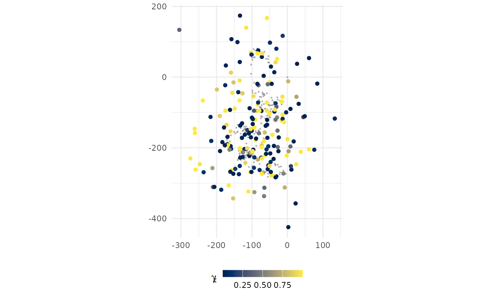

simulate from the rw, crw, or mp process models
to generate a set of x,y (or lon,lat) coordinates with or without error
from supplied input parameters.
sim(
N = 100,
start = list(c(0, 0), as.POSIXct(format(Sys.time(), tz = "UTC", usetz = TRUE))),
model = c("rw", "crw", "mp"),
vmax = 4,
sigma = c(4, 4),
rho_p = 0,
D = 0.05,
sigma_g = 1.25,
error = c("ls", "kf"),
tau = c(1.5, 0.75),
rho_o = 0,
tdist = c("reg", "gamma"),
ts = 6,
tpar = 1.2,
alpha = c(0.9, 0.8)
)Arguments
- N
number of time steps to simulate
- start
coordinates and datetime of start location for simulated track
- model
simulate from the
rw,crwormpprocess models- vmax
maximum travel rate (m/s) of simulated animal
- sigma
a vector of process error sd's for the
rwmodel (ignored ifmodel != "rw")- rho_p
correlation parameter for
rwmodel process covariance matrix (ignored ifmodel != "rw")- D
diffusion coefficient for
crwmodel process covariance matrix (ignored ifmodel != "crw")- sigma_g
random walk sd for time-varying move persistence parameter (ignored if
model != "mp")- error
indicates whether measurement error should mimic Argos Least-Squares (
ls) or Argos Kalman Filter (kf)- tau
vector of LS measurement error sd's (ignored if
error = "kf")- rho_o
correlation parameter for LS covariance matrix (ignored if
error = "kf")- tdist
distribution for simulating location times (
reggenerates locations at regular ts intervals, in h;gammauses a gamma distribution to generate random time intervals)- ts
time interval in h
- tpar
rate parameter for the gamma distributed times, shape is take to be
ts * tparfor a mean interval of approximatelytsh (ignored iftdist = "reg")- alpha
transition probabilities switching model versions of
rworcrwmodels. Probabilities are the transition matrix diagonals (ignored if sigma has length 2 or D has length 1)
Value
a tibble is returned with columns that can include some or all of the following, depending on the arguments used
datetime as POSIXct, tz = UTC (default)lcArgos location classlonlongitude with errorlatlatitude with errorxx in km from arbitrary origin without erroryy in km from arbitrary origin without errorx.erra random deviate drawn from Argos LS or KF error distributiony.erra random deviate drawn from Argos LS or KF error distributionsmajArgos error ellipse semi-major axis in m (iferror = "kf")sminArgos error ellipse semi-minor axis in m (iferror = "kf")eorArgos error ellipse orientation in degrees (iferror = "kf")uvelocity in x direction (ifmodel = "crw"), unit = km/hvvelocity in y direction (ifmodel = "crw"), unit = km/hbbehavioural state (ifmodel = "rw"ormodel = "crw"and multiple process variances given, see examples)gmovement persistence - the autocorrelation between successive movements on the interval 0,1 (ifmodel = "mp")
Examples
tr <- sim(N = 200, model = "crw", D = 0.1, error = "kf", tdist = "reg", ts=12)
plot(tr, error = TRUE)

tr <- sim(N = 200, model = "rw", sigma = c(4,4,0.5,0.5), error = "ls", tdist = "reg")
plot(tr)

tr <- sim(N = 200, model = "crw", D = c(0.1, 0.05), error = "kf", tdist="reg")
plot(tr)
 tr <- sim(N = 200, model = "mp", sigma_g = 1.2, error = "ls", tau = c(2, 1.5), ts=12,
tdist = "gamma", tpar = 1.5)
#> Warning: Acceptance rate is very low (0.00985582730106738) and rejection sampling becomes inefficient. Consider using Gibbs sampling.
plot(tr, error = TRUE, pal = "Cividis")
tr <- sim(N = 200, model = "mp", sigma_g = 1.2, error = "ls", tau = c(2, 1.5), ts=12,
tdist = "gamma", tpar = 1.5)
#> Warning: Acceptance rate is very low (0.00985582730106738) and rejection sampling becomes inefficient. Consider using Gibbs sampling.
plot(tr, error = TRUE, pal = "Cividis")